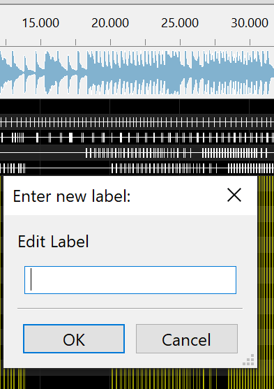
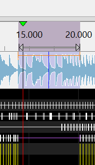

You may have seen people in videos double-click the timing track to add/edit the label between marks (the labels are for convenience, singing face lyrics, state effects, etc.)...
...but when you do it the audio plays instead.
There are two tricks you can use here: